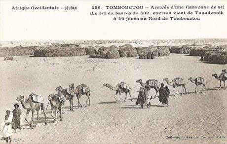

Home / Crossroads and Golden Ages / Africa: Sahel, West and Central
Playable heritage gameSahel Salt Caravan
Also known as Azalai (Taoudenni to Timbuktu)
For many centuries long camel caravans have carried slabs of salt out of the Sahara, from mines such as Taoudenni to Timbuktu and, in Niger, from Bilma to Agadez. The journey takes weeks over dunes and between wells, and the caravan must share water, loads and trust.

How to play
- Lead a salt caravan along the map from the mine to the market.
- Tap a choice, or press its number, to decide how your caravan loads, rests and trades.
- When the well-keeper asks you to share the slabs, pick the answer you think is right.
- Water, salt and goodwill change as you choose; your ending gives one to three stars.
Rules at a glance
- The caravan passes five places on the map and has three possible endings.
- Careful, fair and patient choices earn wisdom points; rushing and cheating earn none.
- Wandering lost, driving a lame camel, pushing at the well, hiding cracks and a wrong share cannot be undone and cost the best ending.
- The sharing puzzle is answered once; a wrong answer starts a dispute.
- Three stars need water, salt and goodwill and none of those missteps.
About the tradition
Salt caravans, known as azalai, have crossed the Sahara for centuries, led by Tuareg and other desert families who know the wells and the stars. Slabs from the Taoudenni mines still travel to Timbuktu, and in Niger a caravan carries salt from Bilma to Agadez. This is an original tale of one such crossing.
Origins
Usually placed in the era of Crossroads and Golden Ages (about 500 to 1500), although its exact origins are uncertain, within the cultural world of Africa: Sahel, West and Central.
Credits
- Tale and artwork: World Heritage Games (original)
- Photo: François-Edmond Fortier, Public domain, source on Wikimedia Commons
- Text: CC BY-SA 4.0, World Heritage Games.
Sources

Get the app
Sahel Salt Caravan is coming to the App Store and Google Play. One app, many traditions, no account needed.
Included in Story & Theatre Games of World
More games to play


.jpg){kind=link}
More from Niger


Dambe
Nigeria +1 · Street and playground games
Imzad Fiddle
Niger +2 · Musical instruments
Kokawa Hausa Wrestling
Nigeria +1 · Wrestling and martial sports
Tifinagh Letter Puzzle
Niger +3 · Puzzles and mind games
Tuareg Tea
Niger · Crafts and making